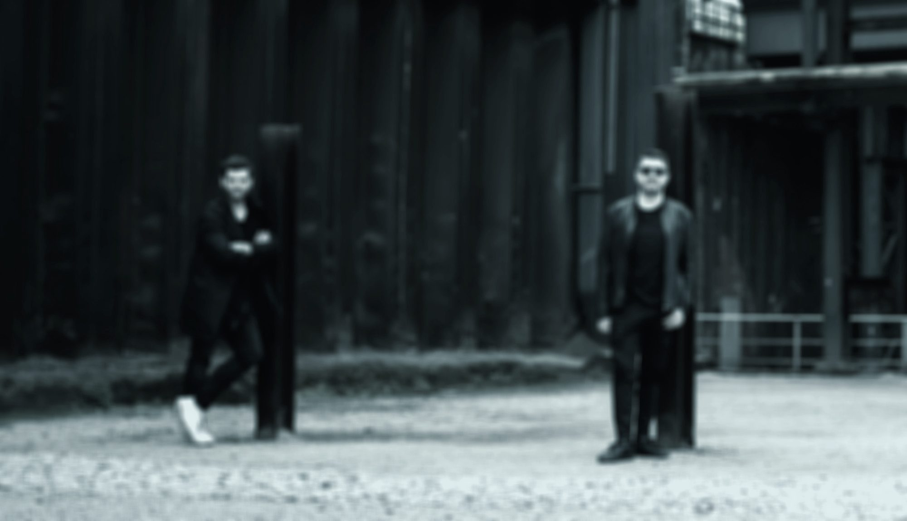

Seven Degrees
Submental Records

Balearic Deep House, forged in the Ruhr.
Released on The Night Drive Armada Black Hole Harthouse Enhanced
136Kmonthly listeners
18M+streams on Spotify
02 / Timeline
03 / Partners
The Night Drive Armada Music Black Hole Harthouse Enhanced Magik Muzik Submental SSL Music Dance Of Toads Stereo Poems Blue Dot Chill You Love Dance ZYX Music Future Sequence
Worked with York Caba Kroll Torsten Stenzel Au/Ra Purple Schulz DJ Sakin & Friends Jay Frog Thomas Foster Cabriolet Paris Simonic Simon Alves Taucher Shears aqeliki Björn Mandry Outlanders DANCCER Living Memories

04 / Story
Daniel Lyall and Maik Drozdzynski met at school in Mülheim an der Ruhr. Inspired by York and Chicane, they founded Scot & Millfield in 1999 and took their first studio steps with the Bass Bumpers around Caba Kroll. Their first release followed in 2003.
Balearic deep house with roots in trance and chill-out – atmospheric, warm and melodic, built for the hour the sun goes down. Highlights include “The Awakening” with York, featured on Dream Dance and Armada Chill, and an official remix of “Café del Mar”.
Releases on The Night Drive, Armada, Black Hole, Enhanced, Harthouse and Magik Muzik; collaborations with York, Torsten Stenzel, Simon Alves and Björn Mandry. Managed and published by Hummingbird, with listeners from London to Mexico City and Sydney.
05 / Press & booking
Hummingbird
Torsten Stenzel & Adrian Zag
Publishing: Hummingbird Music / Armada Music Publishing – incl. sync and licensing requests.